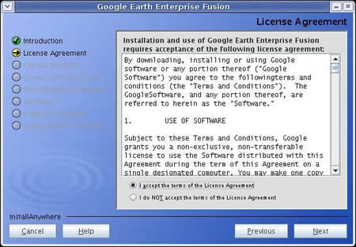
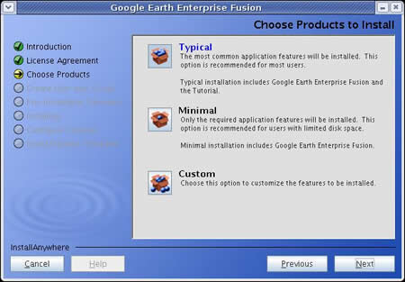
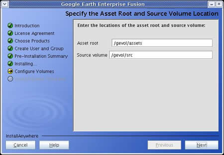
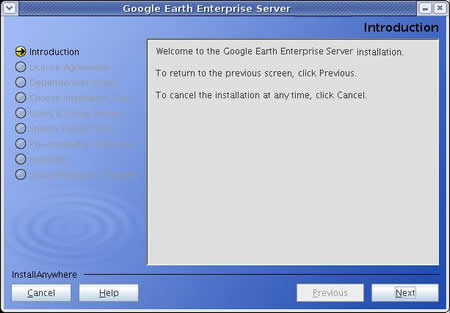
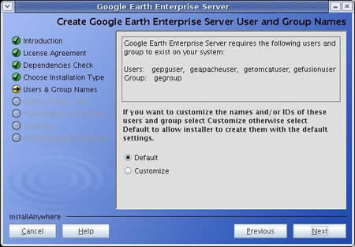

The GUI Installer
- Overview
- Before you Begin
- Installing Google Earth Enterprise Fusion
- Installing Google Earth Enterprise Server
Overview
This section provides information about installing Google Earth Enterprise Fusion, Google Earth Enterprise Server, the Google Earth Enterprise Fusion tutorial files, and the additional files and features provided in the software package.
Both a graphical
user interface (GUI) and a command-line
installer are available for Google Earth Enterprise Server and
Fusion.
A silent installation option is also available if you want to install on multiple machines without user interaction. Use
the command-line installer if you are installing on a server without an X11
server.
The GUI installers are recommended for most Google Earth Enterprise Fusion and
Server installations. During installation, you are prompted
and guided through the process automatically.
Before you Begin
The Google Earth Enterprise software is available in two formats: as a download from Google.com servers, or on physical media in the form of DVDs. The instructions below are the same for both formats, once the following setup has been completed:
If you downloaded the software package
Unpack the archived installer(s) to a temporary directory:
tar -zxvf GEEFusion40.tar.gz -C /target/directory
tar -zxvf GEEServer40.tar.gz -C /target/directory
If you ordered the DVD
Insert the distribution DVD, and mount the DVD drive.
Installing Google Earth Enterprise Fusion
- Open a terminal window on your Linux workstation.
- Log in as
root.
- Stop the Google Earth Enterprise Fusion system manager and Google Earth
Enterprise Server, if you have a previous version installed and they are
running:
/etc/init.d/gefusion stop
/etc/init.d/geserver stop
Note: If you try to run the Google
Earth Enterprise installer using a secure shell (ssh -XY user@machine),
you might get the following error:
X11 connection rejected because of wrong authentication.
X connection to localhost:10.0 broken (explicit kill or server shutdown)
If you do, set the following variable to point to the X11 authorization file:
export XAUTHORITY=~/.Xauthority
- Navigate to your DVD directory, or the directory to which you extracted the Google Earth Enterprise files, and run the Google Earth Fusion installer:
cd /media/cdrom
./InstallGEFusionGUI.sh
If your DVD automounted without exec privileges, you might need to
run sh ./InstallGEFusionGUI.sh instead.
The installer starts and the following window appears:
- Click Next to continue. You can click Cancel to
exit the installation process or Previous to return to
the previous screen at any time. The License Agreement appears:

- Accept the License Agreement and click Next. The Choose
Products screen appears:

- Choose the installlation type or click Next to
accept the default (Typical). If the installer determines it needs to upgrade
any product you are installing, it prompts you to confirm the upgrade.
- Typical installation includes Google Earth Enterprise Fusion and
the Tutorial.
- Minimal installation includes only Google Earth Enterprise Fusion.
- Custom installation allows you to customize the components you install.
- The installer displays the default location for the backup files:
/var/opt/google/fusion-backups/...
Click Next to continue.
- You are prompted to create the user and group for Google Earth Enterprise
Fusion. Click Next to accept the default, or enter your customized
names. The Pre-Installation Summary appears:
- Click Install to continue. The installer prompts you to designate
your asset root and source volumes. A source volume is a directory that contains your source data files.

- Click Next to accept the default (
/gevol/assets and /gevol/src), or enter
the paths you want to set for your asset root and source volume. (See Before you Install for more information.)
- Click Done.
- Log out of the system, and log back in (not as root).
- From the command line, launch Google Earth Enterprise Fusion:
fusion
Installing Google Earth Enterprise Server
- Open a terminal window on your Linux workstation.
- Log in as
root.
- Stop the Google Earth Enterprise Fusion system manager and Google Earth
Enterprise Server, if you have a previous version installed and they are running:
/etc/init.d/gefusion stop
/etc/init.d/geserver stop
- Navigate to your DVD directory, or the directory to which you extracted the Google Earth Enterprise files, and run the Google Earth Server installer:
./InstallGEServerGUI.sh
If your DVD automounted without exec privileges, you might need to
run sh ./InstallGEServerGUI.sh instead.
The installation script starts running and the following window appears:

- Click Next to continue. You can click Cancel to
exit the installation process or Previous to return
to the previous screen at any time. The License Agreement appears:
- Accept the License Agreement and click Next. The Choose
products screens appears:
- Choose the installlation type click Next to
accept the default (Typical). If the installer determines it needs
to upgrade any product you are installing, it prompts you to confirm
the upgrade.
- Typical installation includes Google Earth Enterprise Server
and Google Earth Enterprise Places Database.
- Minimal installation includes only Google Earth Enterprise Server.
- Custom installation allows you to customize the components you install.
- The installer displays the default location for the backup
files:
/var/opt/google/fusion-backups/...
Click Next to continue. The User and Group Names screen appears:

- If you want to customize user or group names or IDs, select Customize.
Otherwise, select Default and click Next.
The Publish Root Location screen appears:
- The installer prompts you to designate your publish root. (See
Before you Install for more information.)
The Pre-Installation summary appears.
- Click Install. When the installer is finished, you can choose to start
the Google Earth Server services.
- Click Done to complete the installation.